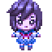

ブラウザ・スマホゲーム_by_HSP3dish.js
『HSP3』ゲーム が ブラウザ・スマホ画面で動きます。
■ ブラウザ・スマホ用『HSP3』ゲーム
.....--[１]-- --[２]-- --[３]----
--[１]-- 今のところ、『HSPTV!』公式サンプルの利用のみです。 『HSPTV!』様、感謝いたします。
--[２]-- 自作Ｗebアプリ実験場です。 主に[１]でのテスト版を元にしています。
--[３]-- 自作Ｗebアプリほぼ完成版です。 主に[１,２]での実験財産を元にしています。
＊下の各タマネちゃん(＋タイトル)を押すと、ブラウザ・スマホ画面が開きます。
「マジカルタマホーキ」
https://hsp.tv/game/tamahouki_inst.html
...(/tamahouki_src.zip)
あそびかた (『hsp.tv』の「珠音ちゃんサンプルゲーム」解説より)
...珠音ちゃんを操作して敵を撃ち倒してください。1回やられたらゲームオーバーです。
...キー操作 : カーソルキーで移動、スペースキーで弾発射
...マウス操作 : 画面上でドラッグすることで移動、右下のAUTOFIREアイコンで弾発射ON/OFF
...ハイスコアはネットランキング集計されます。
...また、タイトル画面から「Tweet Score」をクリックしてゲームの得点をTwitterで共有することができます。
「タマドット」
sample/hsp3dish/tamadot_dish.hsp
(＊画面表示のみ)
...([sample/hsp3dish]の[tamadot_dish.hsp])
「タマネジャンプ」
sample/hsp3dish/tamane_jump.hsp
(＊スマホは画面表示のみ)
...([sample/hsp3dish]の[tamane_jump.hsp]内コメントより)
...カーソルキーで左右に移動、スペースキーでジャンプ
...コインをすべて取ったらクリアです...トゲにあたるとアウトです
「ガラスキューブバウンド」
sample/hsp3dish/xsample_gcube.hsp
(＊画面表示のみ)
...([sample/hsp3dish]の[xsample_gcube.hsp])
「ライトテスト１」
sample/hgimg4/light_test1.hsp
(＊画面表示のみ)
...([sample/hgimg4]の[light_test1.hsp])
「ライトテスト３」
sample/hgimg4/light_test3.hsp
...([sample/hgimg4]の[light_test3.hsp])
...ポイントライト色変化テスト...マウス/タッチドラッグでカメラを動かすことができます
「スネークゲーム」
sample/hgimg4/boxf_snake.hsp
...([sample/hgimg4]の[boxf_snake.hsp]内コメントより)
...立方体を使った簡単なスネークゲーム...カーソルキーで移動...赤いブロックを取っていってください
「プロ生ちゃんボックス」 (プロ生ちゃん 無)
sample/pronama3d/pronama_box.hsp (プロ生ちゃん なし)
...[sample/pronama3d]内の[pronama_box.hsp]の(プロ生ちゃん 無)
...マウス/タッチで追加で箱を落とします...ドラッグでカメラを動かすことができます
「タマネ２」
sample/hgimg4/tamane2.hsp
...([sample/hgimg4]内の[tamane2.hsp])
...マウス/タッチドラッグでカメラを動かすことができます
「タマネ１」
sample/hgimg4/tamane1.hsp
...([sample/hgimg4]内の[tamane.hsp])
...マウス/タッチドラッグでカメラを動かすことができます
「プロ生ちゃんボックス」(プロ生ちゃん 有)
sample/pronama3d/pronama_box.hsp (プロ生ちゃん あり)
...([sample/pronama3d]内の[pronama_box.hsp])
...マウス/タッチで追加で箱を落とします...ドラッグでカメラを動かすことができます
「タマネちゃんボックス」(プロ生ちゃん → タマネちゃん)
sample/pronama3d/tamane1box.hsp (プロ生ちゃん → タマネちゃん)
...[sample/pronama3d]内の[pronama_box.hsp]の(プロ生ちゃん → タマネちゃん)
...マウス/タッチで追加で箱を落とします...ドラッグでカメラを動かすことができます
「タマネちゃんボール」(プロ生ちゃん → タマネちゃん)
sample/pronama3d/tamane2box.hsp (プロ生ちゃん → タマネちゃん)
...[sample/pronama3d]内の[pronama_box.hsp]の(プロ生ちゃん → タマネちゃん)
...マウス/タッチで追加で箱を落とします...ドラッグでカメラを動かすことができます
.....--[１]-- --[２]-- --[３]--